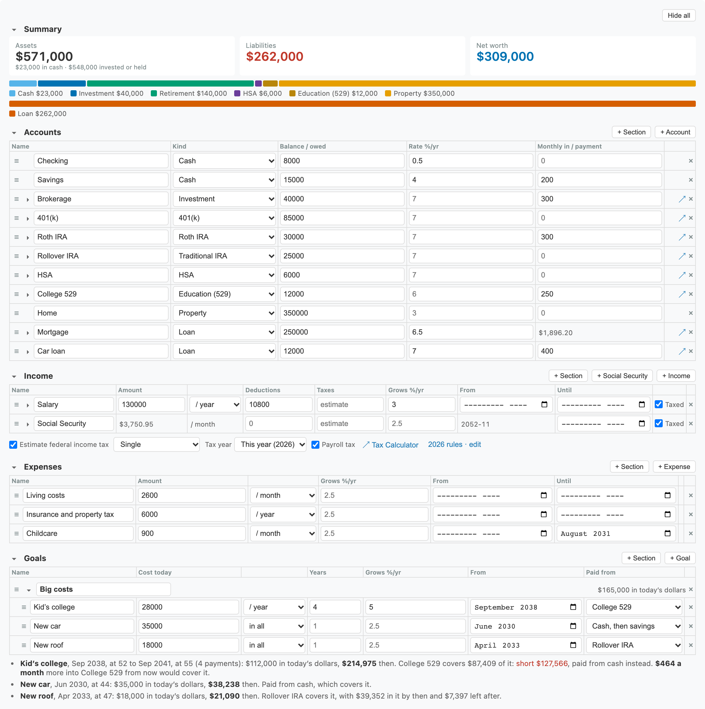
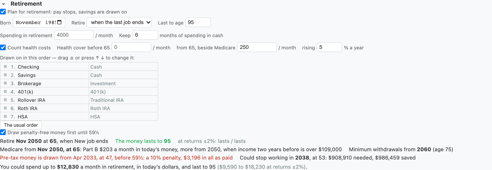
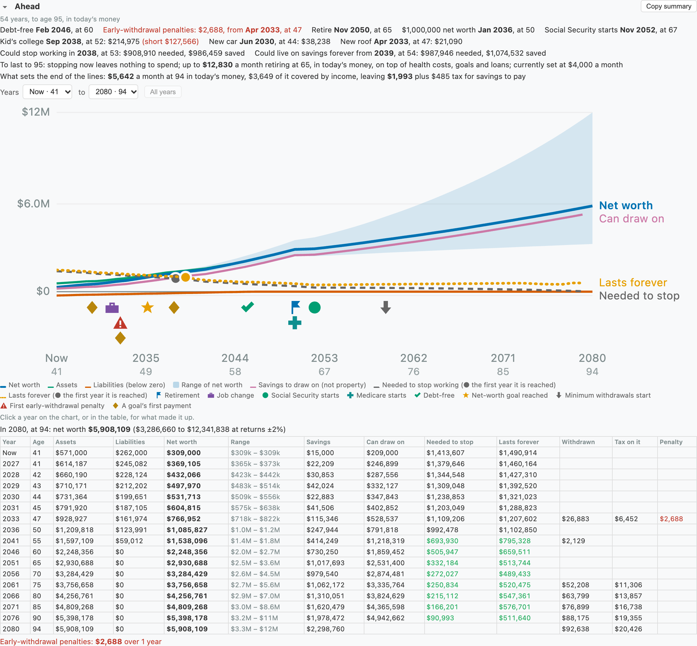
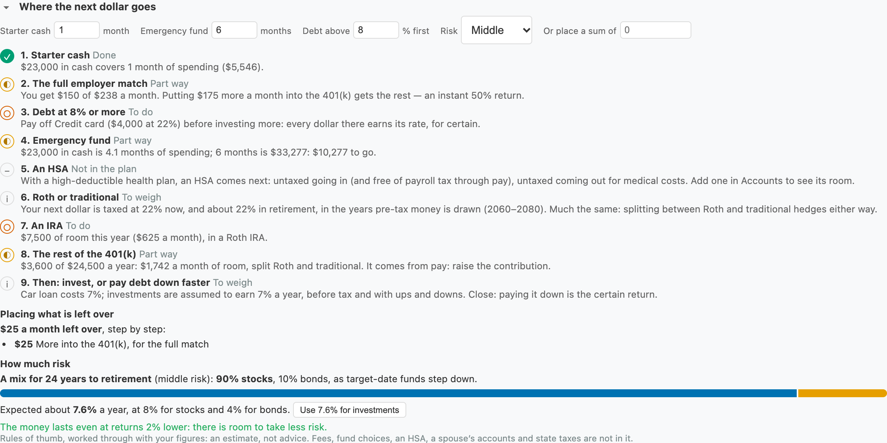
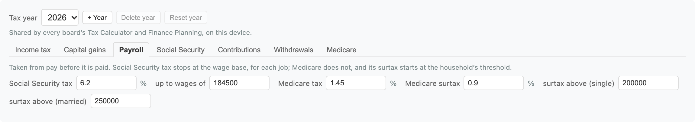

Most people know roughly what they earn and what they owe. Fewer know what it adds up
to: what is left each month, when the debts end, whether the savings last through
retirement, and how soon work could become optional. Put your accounts, income and
expenses in once, and the planner works all of that out — month by month, for as many
years as you like — and keeps it up to date as you change anything.
That link opens Toolboard, adds a Finance Planning tool and fills it with an invented
household — a salary, a mortgage, a car loan, a 401(k). Everything stays in your
browser: no account, no upload, nothing sent anywhere. Your figures are left out of
share links and HTML exports.

The made-up example in Edit: each account, income, expense and goal on a line of its own.
What it works out for you
Net worth today
Assets and liabilities by kind — cash, investments, retirement accounts, property,
loans, credit cards — and the net of them, with a bar showing where it sits.
A month, now
Income, less deductions and taxes, is take-home; less expenses, loan payments,
escrow and what goes into accounts, it is what is left over — or short — and which
account takes it.
Where it leads
Every account worked forward a month at a time at its own rate, with a range for
investments doing better or worse. When the debts end, when a goal is reached, and
when cash would run out.
Retirement
Pay stops, savings are drawn on in the order you choose, pre-tax money is taxed as
it comes out, and minimum withdrawals begin on time. Whether it lasts, and the most
you could spend.
When you could stop working
For each year, the savings you would need to stop then and still last — beside what
you will have — and the first year the two meet.
Taxes
Federal income tax, payroll tax, the taxable part of Social Security and capital
gains, estimated from the year's rules — or the taxes from your pay stub, typed in.
Set up a plan in ten minutes
It does not need to be exact to be useful. Round figures from a banking app and a pay stub
are enough to see the shape of things; refine the parts that matter once you can see which
they are.
List what you have and owe
One line per account, with its kind and balance. A rate left empty uses the default
for its kind, which you can change under Assumptions.
Checking $8,000 · Savings $15,000 · 401(k) $85,000 · Home $350,000 ·
Mortgage $250,000 at 6.5%.
Give each loan its terms
Press ▸ on a loan and fill in what the Loan Calculator takes — original amount, term,
closing date — and the payment is worked out for you. Escrow goes there too.
Add what comes in
Pay as it is on the pay stub: gross, per month or per year, with its deductions. Leave
Taxes empty to have them estimated, or type them in.
Send pay into a 401(k)
Press ▸ on the pay line and say how much of its deductions goes into which account, and
what the employer adds — into more than one with + Another account. It is saved,
not spent — and not counted twice.
Add what goes out
Rent, food, insurance — a few lines are enough. Each rises with inflation unless you
say otherwise, and can start or end in a given month.
Add the big costs ahead
College, a car, a wedding: + Goal, its cost in today's dollars, when, and the
account it is paid from.
Add Social Security
Press + Social Security, give your birth month, and either the benefit from
your statement on ssa.gov or nothing at all, for an estimate from your pay.
Plan for retirement
Tick Plan for retirement, say when, how long it has to last and what you
expect to spend. Then read Ahead.
Accounts
Each account has a kind, a balance (or what is owed on it), a yearly rate and an amount
added — or, for a loan, paid — each month. Loans and investments open their calculator in a
popup from ↗, filled in from the line; Use these figures puts the result back.
Loans: with an original amount, a term and a closing date, the payment
and today's balance follow the schedule, and the details say how far ahead or behind it
you are. Escrow is paid with the loan and goes on after it is paid off.
Investments: monthly or annual compounding, as the Investment Calculator
counts it, and a Cost basis — what was paid in — so that what is drawn in
retirement can be taxed as a gain.
Retirement accounts: pick the type in Kind — 401(k), Roth
401(k), Traditional IRA or Roth IRA (a 403(b) or 457 counts as a 401(k)).
Traditional money is taxed as it is drawn and has minimum withdrawals; Roth money comes out
untaxed and has none. Each has its year's contribution limit, and a Roth IRA's shrinks with
income. An IRA takes no employer match. A 457(b) or Roth 457(b), for
government and some non-profit jobs, has a limit of its own beside a 401(k)'s and no early
penalty once the job is left. Going over a limit is said. A SEP or SIMPLE IRA, or a solo
401(k), can be entered as the nearest of these.
HSA: with a high-deductible health plan. Pay into it through payroll is
free of income and payroll tax; paid in directly, of income tax. Drawn for medical costs
it is untaxed; for anything else, taxed, with a 20% penalty before 65. Its limit — self-only
or family cover — counts the employer's money too. It is drawn last in retirement.
Education (529): grows untaxed and is spent untaxed on school. The
planner spends it only on the goals paid from it — never in the withdrawal order — and
stops adding to it after the last of them. There is no federal limit a year.
Sections:+ Section adds a heading with its own totals; drag
☰ — or press ↑ and ↓ on it — to move lines between sections and reorder them.
Income
A line of income is an amount per month or per year, with deductions and taxes in the same
period, as on a pay stub. It grows each year by its own rate, or by inflation, and can run
from and until given months. Untick Taxed for income that is not, such as a gift.
Into accounts: the parts of the deductions saved into a 401(k) and the
like, each with the employer's match. + Another account splits it — half into a
Roth 401(k) and half into a traditional one, say, with the match into the traditional one.
Only pay into a traditional account comes off taxed pay; all of it still pays payroll tax.
A 401(k) and a Roth 401(k) share one contribution limit, as do a traditional and a Roth
IRA.
Taxes typed in are paid as typed and not estimated again; the line's
income still counts toward the bracket the rest of your income is taxed in.
Pay from work: ticked by default. Untick it for a pension, rent or an
annuity — they pay no payroll tax, and carry on when work stops.
Social Security: from the benefit at full retirement age on your
statement, reduced for claiming early or raised for waiting, as the SSA does. Left
empty, it is estimated from your pay: the best 35 years of earnings, each up to the wage
base, through the year's formula. With two people, each Social Security line says whose
pay counts.
Your statement is better than the estimate. The planner knows today's pay,
not your history: it assumes the years before now earned the same, or what you give as
Past pay. Spousal and survivor benefits are not counted.
Expenses
What goes out, per month or per year, each rising with inflation unless given a rate of its
own, and each able to start or stop in a given month — childcare that ends, a car payment
that begins. Loan payments are not expenses here: they come from the loans themselves.
Edit, Both and View
Hover over the planner for three buttons, which work as a note's do. View shows
what the plan comes to: the summary, a month now and Ahead. Edit shows what goes
into it: accounts, income, expenses, goals, retirement, where the next dollar goes and the
assumptions. Both puts them side by side, with a divider to drag; the button beside the
three puts one over the other instead, and back.
It opens on View, and a new plan on Edit. Double-click in View to edit, though not on the chart
or the years, which are clicked anyway. Press Esc or click elsewhere on the board and it goes
back to View; nothing you typed is lost.
Turning a line off
Every account, income, expense and goal has a tick at the start of its row. Untick it to see
the plan without that line — no second car, no childcare, a job gone — and tick it again to
bring it back as it was. While it is off the plan goes on as if the line were not there, though
it stays in its table, dimmed, and its section says how many are off. Copy summary and the
on-device AI name what is left out.
What depends on an account that is off keeps its settings for when it comes back. Meanwhile a
goal is paid from cash and then savings, what is left over goes to the first cash account, and
the account drops out of the withdrawal order but keeps its place. Pay going into it stays in
take-home, and any employer match on it stops. A Social Security line that is off pays
nothing, but still gives the birth month if the plan has no other.
Duplicating a line
The button beside a line's × puts a copy right under it, with everything the line holds, its
details under ▸ too, and “copy” after its name. The copy counts at once, so a copied account
adds to net worth and a copied job to income. To compare two versions, duplicate a line, change
the copy and untick whichever you are not looking at. Goals and pay that use an account go on
using the original. A copied Social Security line is for a second person: it starts with no
pay counted toward its estimate, so choose that person's pay under ▸.
Goals
A big cost ahead — a child's college, a car, a wedding, a new roof — is a goal rather than
an expense. Expenses give way to your retirement spending once you retire; a goal is paid
when it falls, retired or not. Give it:
A cost in today's dollars, in all or a year, and over how many years:
college at $28,000 a year over 4, a car at $35,000 in all over 1. Each payment falls at
the start of its year.
How fast its price rises. Inflation, unless you say otherwise; college
costs have tended to rise faster, around 5% a year.
The account it is paid from — a 529, a savings account or any other.
What that account cannot cover comes from cash, then from savings in the withdrawal
order. A draw for a goal is taxed as one sum on top of that year's income, with any
early-withdrawal penalty.
Under the table each goal says what it costs then, and whether its account covers it. If it
falls short, it says how much more a month into that account from now would cover it —
and Where the next dollar goes puts that after the emergency fund. A goal
paid from cash says whether cash covers it or savings have to be drawn on. Ahead marks each
goal on the chart with a ◆ in the strip above the years and lists it among the dates.
Retirement

From the retirement month, pay stops — Social Security, and income with an end date of its
own, go on — and so do contributions. One spending figure, in today's dollars, takes the
place of Expenses; loans are still paid.
Retirement starts at an age you give, or when the last job ends: the month after the
latest end date on your pay from work. A job with no end date falls back on the age, and says
so. Tick Part-time or bridge work on a pay line (▸) for work that shouldn't hold
retirement back; give it an end date and it carries on until then. If pay stops a year or
more before the age you gave, the planner says savings are drawn on in between, and offers to
go by the job instead.
The cash buffer: each month the cash account is topped up to that many
months of spending, drawing on the other accounts in the order listed. Drag to change
it, or press Reset to the usual order — cash, investments, pre-tax, Roth, then the
HSA; property is never drawn on.
Taxes on what is drawn: pre-tax money is income, and enough more is
drawn to pay its tax. Gains in an investment with a cost basis are taxed at the
capital-gains rates. Roth money is not taxed.
Minimum withdrawals: from the age the rules give (73, or 75 for those
born in 1960 or later), each pre-tax account pays out at least its balance over the IRS
divisor for the age.
Before 59½: pre-tax money drawn earlier pays a 10% penalty on top of its
tax, and enough more is drawn to cover both — except from a 401(k) left in the year you
turn 55 or later — going by the end date of the job paying into it, if it has one — or a
457(b) once work stops. From a Roth, contributions come out first
and free; earnings drawn early are taxed and penalised. Give its Contributions in
▸; left empty, today's balance counts as contributions and only growth from here as
earnings.
An HSA before 65: drawn for medical costs, nothing. Otherwise taxed, with
a 20% penalty; from 65, only taxed.
Penalty-free money first: until 59½, ticked by default, accounts that would
not be penalised — and a Roth's contributions — are drawn before those that would, in
your order. Untick it to follow your order as it stands. Ahead, the year table and a
year's breakdown all show what penalties come to.
Health costs: tick Count health costs to add cover before 65 — a
marketplace plan, COBRA, a spouse's — and, from 65, Medicare's Part B for each person,
with the surcharge when income two years before was high, and what goes beside it. They
rise with medical inflation (5% unless you say). Leave it off if your spending figure has
them already. An HSA stops taking money at 65.
Before retirement: if pay ends before the retirement you set, the
months in between are paid from savings in the same order — never by overdrawing cash —
and the planner says so, and when pay stops.
The most you could spend and still last, worked out a moment after you
stop typing, with the range for investments doing better or worse.
Ahead

The example to age 95: debt-free at 60, and enough saved to stop working at 53 — the dot
where savings cross the dashed line.
Milestones with the month and the age: debt-free, the net-worth goal,
retirement, Social Security starting, cash or savings running out.
The chart: net worth with its range, assets and liabilities; savings
you can draw on, set apart from property; the dashed line of what would be needed to
stop working; and the dotted line of what would last forever. Hover for any year's figures. Years … to … narrows it to the
years you care about, and rescales it to them.
What happens when: a strip of icons above the years marks retirement,
job changes, Social Security and Medicare starting, the last debt paid, the net-worth
goal, minimum withdrawals, the first early-withdrawal penalty, cash or savings running
out, and each goal. Hover for the date and age, and click for the year it falls in.
A job change comes from the dates on pay lines: one ending and another starting within
three months. Either alone shows as new pay, or pay ending.
The year table: the same figures by year and age, with what is drawn in
retirement and the tax on it. Any early-withdrawal penalty has a column of its own — hover
for the accounts — with the total underneath; a long plan lists every year charged one,
however few of the others it shows.
A year, taken apart: click a year on the chart or in the table — or
Tab to it and press Enter — for what made it up: each line of money in and out, what was
drawn from savings and the tax on it, each account from the start of the year to its end
(what went in, what was drawn, what it earned or was charged), what happened that year,
and the assumptions it was worked out with — inflation, each rate and growth, the tax
rules moved up to that year, the retirement figures. Now is this month; every
other year is the twelve months to it. It is in dollars of the time, so that it adds up,
with net worth in today's money beside it. ‹ and › step through the years.
Copy summary puts the rollup and the projection on the clipboard as
Markdown, for a document or a message.
When you could stop working
For each year, the planner asks: if work stopped at its start, how much would the savings
you can draw on — cash, investments, retirement accounts, not the house — need to be for the
money to last to the age in Retirement? It answers with everything else in the plan: the
spending, Social Security from its claiming age (smaller, if estimated, for stopping sooner),
pensions, the loans still to pay, returns, inflation and taxes. The first year your own
savings are enough is where it says you could stop. It needs only a birth month; Retirement
does not have to be ticked.
The figure usually falls, with fewer years left to pay for, but it need not. Where a year's
growth on the pot is more than what is drawn — Social Security covering most of the spending,
say — or health costs rise faster than returns, it can climb for a while, more so with
today's money off. What it would take beyond your savings that year is reckoned in
the mix of accounts you hold today, whatever is left of them by then.
When savings could last forever
What is needed to stop falls towards nothing because it only has to reach an age. The dotted
Lasts forever line has no age to reach: it is the least that never runs out and, by
the end of the plan, earns enough to cover what is drawn and keep up with inflation, so it
could go on past it. It drops when Social Security or a pension starts or a loan is paid off,
then levels out rather than falling away. The first year your savings reach it is marked on
the chart and named above it.
It is reckoned in the mix of accounts you hold today, with the plan's own spending, income
and taxes. Minimum withdrawals are left out, since they move money rather than spend it, so
with a lot in pre-tax accounts the figure runs a little low. It says out of reach
when what the money earns does not outrun inflation, as with savings all in cash.
It takes the plan's return every year, with no allowance for bad ones, and it is sensitive to
it: what a pot can pay for ever is about what it earns above inflation, so a return one point
lower than 4% above inflation means a third more savings. Try it with lower rates before
relying on it.
What sets the end of the lines gives the month behind both: the plan's last year in
today's money, what it costs, what income covers and what is left for savings to pay, with
the tax on it. Hover for the parts. Needed to stop falls to about a year of what is left;
Lasts forever is the pot that could go on paying it. Health costs usually grow faster than
inflation, so they are still climbing at that age, and a plan running longer would ask for
a little more: read forever as forever at that age's costs.
What you could spend
To last to … turns the question round: rather than the savings a level of spending
needs, it gives the most you could spend each month for the savings you have, stopping work
now and on the plan's date, in today's money. Click a year for stopping then: it heads the
year's breakdown, and the year's tooltip on the chart gives it too. These are
everyday spending: health costs, goals and any loans are paid on top. Where stopping leaves
nothing to spend, it says so.
Where the next dollar goes

The question most people have is not where the money is but where the next dollar should
go. The section works through the order most guides give, with your figures, and marks each
step done, part way or still to do:
Starter cash A month of spending, before anything else.
The full employer match Give the formula on the pay line (▸) — “50% of
what I put in, up to 6% of pay” — and it says whether you get all of it, and how much more
a month would — only as far as your 401(k) limit lets you put in.
An HSA With a high-deductible health plan: the room left this year,
best through pay.
Expensive debt Anything at 8% or more (you choose the rate), dearest
first: its rate is a certain return.
The emergency fund Six months of spending, or what you choose.
Goals ahead Any goal its account falls short of, and how much more a
month would cover it.
Roth or traditional The federal tax on your next dollar today, against
the average in the retirement years pre-tax money is drawn. Lower later favours
traditional; higher later, Roth; close, a split.
An IRA The room left this year, Roth if your income allows.
The rest of the 401(k) The room left, from pay.
Then Paying the next-dearest debt down faster against investing, by its
rate and the return you assume.
Below it, this month's leftover — or a sum you type in — is split along the steps in order.
A sum skips the match and the 401(k), which only take money from pay. Last, a stocks and
bonds mix for the years to retirement, stepping down as target-date funds do and leaning
Cautious, Middle or Bold, with its expected return — which you can
make the plan's own — and whether the plan still lasts if returns come in lower.
Assumptions
How many years to look ahead (when not planning retirement), inflation, the range on
investments, a net-worth goal, and the default rate for each kind of account. Tick In
today's money to see every future figure with inflation taken out — the clearest way to
tell whether something is really growing.
Tax & Retirement Rules

The rules of law the planner relies on are not built into it: they live in their own tool,
by year, shared by every Finance Planning and Tax Calculator on the device. Open it from
2026 rules · edit beside the tax settings, or add Tax & Retirement Rules
from the Finance toolbox. Each tab says what is wrong with what is typed, and the planner
keeps to the built-in figure until it is put right.
Income tax: the federal brackets and standard deduction, single and
married filing jointly.
Capital gains: the 0%, 15% and 20% brackets.
Payroll: Social Security tax up to the wage base, Medicare, and its
surtax.
Social Security: how much of a benefit is taxed, the claiming
adjustments, full retirement age by birth year, and the benefit formula the estimate
uses.
Contributions: the 401(k) and IRA limits and their catch-ups.
Withdrawals: the early-withdrawal age and penalty, when minimum
withdrawals start, and the IRS divisor table.
Medicare: the age it starts, Part B, and the surcharges for higher
incomes.
A new year: press + Year to copy the latest, then change what the
IRS and SSA announce — usually in October and November. The planner uses this year's rules,
or the year its tax settings name, and moves amounts that rise with inflation up with it in
later years; the Social Security taxation amounts and the surtax threshold, fixed in law,
stay as they are.
BoardAI
Where Chrome's own model can run, ✨ offers to check the plan and list what stands out,
explain where it leads in plain language, draft a plan from a description (“I earn $95k,
rent is $2,000…”), or sort the expenses into sections. It runs on your device; nothing is
sent anywhere. It reads the figures the planner has worked out and quotes them — every sum is
the planner's, never the model's.
Keeping it to yourself
Hide all — or ▾ on any section — folds it to its heading, figures and
all, for looking at the plan with someone else in the room.
Share links and HTML exports carry the tool, not your figures.
JSON exports, your own backups, keep the plan.
Where it stops
Federal taxes only: no state or local income tax. Type your taxes on the pay line if
they matter.
One birth month for the household: a couple shows one age, and retires on one date.
Gains are taxed only on investments given a cost basis, and only as they are drawn in
retirement; dividends along the way are not.
Social Security estimates leave out spousal and survivor benefits and the reduction for
some government pensions.
A 529 leaves out state tax deductions, financial aid, and the tax and penalty on money
used for anything but school: the planner spends it only on its goals.
Early withdrawals: no 72(t) equal payments, no age-50 rule for public-safety workers, no
Roth five-year rule, and no other exceptions such as disability or a first home.
Returns are steady, a rate a year, with a range either side — not a simulation of good
and bad years in different orders.
An estimate, not advice. The planner is as good as the figures and the
assumptions in it, and a small change in a return or a spending figure moves a date by
years. Use it to see the shape of your plan and what moves it — then check the decisions that
matter with someone qualified.